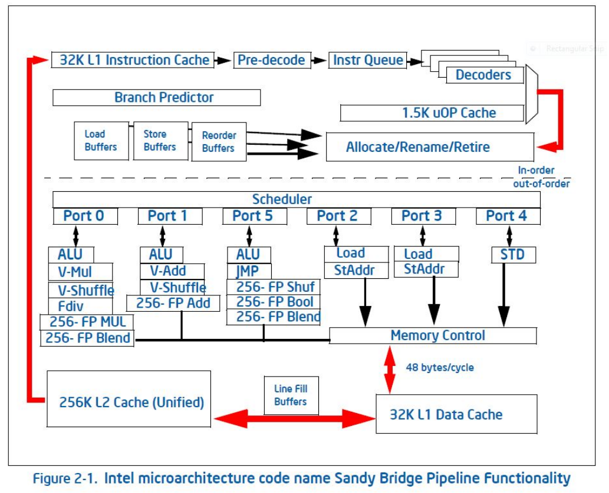
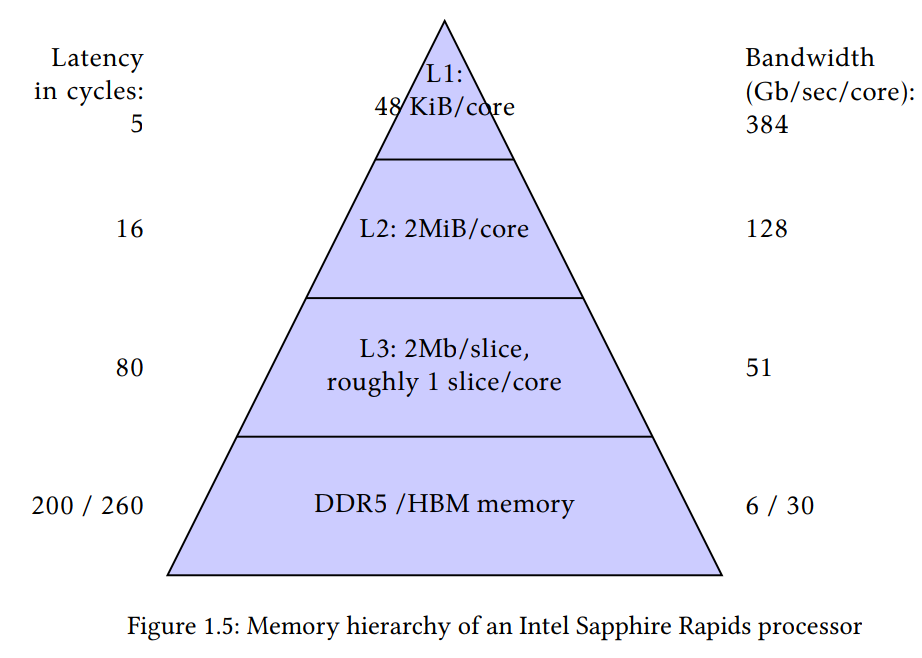
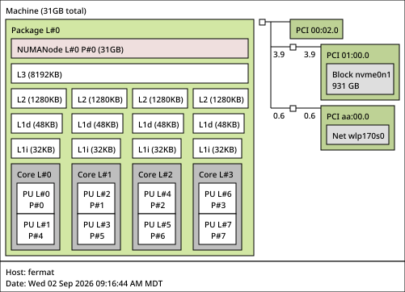

20260827 - CPUs Lie to You¶
Pipelining, Superscalar Processors, Memory Hierarchy, and You!¶
The von Neumann Architecture¶
Two places data can reside: registers and memory
Computation can only be done on data in registers
Memory access occurs on a per-byte level
Instructions are run once per clock cycle
Instructions are run in order
These rules worked as a good ground level approach for how to do things initially. Then we wanted to go faster and ran into issues.
The real world¶
What we’ve talked about so far is the “virtual machine” that we use to interface with CPUs.
It is simply the lingua franca that is nearly universal when telling a CPU what operations to perform.
But there’s a key phrase in hardware (and compilers) that allows the CPU to not necessarily do things exactly as you requested:
“as if”
CPUs are able to do whatever operations they want, as long as the end result is as if the instructions were done on the virtual machine.
Effectively, it’s a mutual contract; we treat the CPU as some virtual architecture with certain rules and give instructions based on those rules. The CPU is able to do whatever it wants as long as the correct result is done.
Side tangent: The same “as if” notion applies to compilers…. This is where things like undefined behavior in C can be interesting… Also why debugging code in fully optimized mode can be difficult to impossible.
Example: We program the CPU as if all the instructions are executed one-at-a-time in sequence. However, the CPU doesn’t have to do that, as long as the end result of the program is the exact same.
Some examples of modern CPUs breaking the von Neumann architecture model:
Multiple levels of memory cache
Superscalar processors (a single “processor” actually has multiple independent “sub-processors” to perform execution on)
Pipelining and multiple-issue (executing multiple instructions at the same time)
Branch prediction and speculative execution (precomputing based on predicted outcome of jump instructions)
Out-of-order execution (instructions performed out of the originally requested order)
Prefetching data (predictively requesting data transfer from memory before program explicitly asks for it)
Important: CPU computation can still only be done by data in registers. This is the one part of basic CPU architecture we’ve covered that is still true.
Latency vs Throughput¶
A small aside on latency vs throughput
Latency is start up time
Throughput is how much you can do at max speed
total time to do N things is:
(since throughput is normally related to inverse time, so MB/s or FLOP/s)
Pipelining and instruction-level-parallelism (ILP)¶
Modern CPUs don’t do one instruction per-clock cycle (IPC); they often exceed 1 per core, reportedly as high as 2-3.
Fetch, Decode, Execute¶
CPUs actually run on a fetch, decode, execute order for processing instructions
First, an instruction is fetched
(is actually a non-trivial operation, as the length of each instruction varies, but that’s goes into hardware design)
Then the instruction is decoded
Instructions are split into micro operations, also written out as \(\mu\)Ops, or uOps
These uops do the actual computation, memory movement, or logical instructions
Micro ops depend not just on instructions, but on arguments as well
Then the instructions are executed
Actually run the micro ops
Pipelining¶
Using fetch, decode, execute, each instruction would take multiple CPU cycles, even if uOp only took 1
Also, the hardware circuits for each step would be unused most of the time
While instruction fetch is happening, decode and execute aren’t doing anything
Instruction |
1 |
2 |
3 |
4 |
5 |
6 |
7 |
8 |
9 |
|---|---|---|---|---|---|---|---|---|---|
|
F |
D |
E |
||||||
|
F |
D |
E |
||||||
|
F |
D |
E |
F = Fetch, D = Decode, E = Execute
Numbers are each clock cycle
To fix this, we pipeline the instructions
Each instruction starts processing before the last has finished
Akin to assembly line
Instruction |
1 |
2 |
3 |
4 |
5 |
6 |
7 |
8 |
9 |
|---|---|---|---|---|---|---|---|---|---|
|
F |
D |
E |
||||||
|
F |
D |
E |
||||||
|
F |
D |
E |
Superscalar processors and ILP¶
Not all micro ops complete in one instruction
Example: integer division often takes 6-10 times longer to do than integer multiplication
Some micro ops take longer waiting for outside resources (memory)
How do we keep the CPU running while waiting?
Have multiple execution units per core
We can run multiple instructions at the same time!

Different execution units live on different “ports”
Each port executes one instruction at a time
https://www.uops.info/ table also documents which ports are used in specific architectures for specific things
Examining actual pipeline usage¶
double a[1000], b[1000], c[1000];
void foo() {
for (int i=0; i<1000; i++) {
c[i] = a[i] + b[i];
}
}
"foo":
mov eax, 0
.L2:
movsd xmm0, QWORD PTR "a"[rax]
addsd xmm0, QWORD PTR "b"[rax]
movsd QWORD PTR "c"[rax], xmm0
add rax, 8
cmp rax, 8000
jne .L2
ret
"c":
.zero 8000
"b":
.zero 8000
"a":
.zero 8000
https://godbolt.org/z/jvar6sPzq
Use Godbolt with MCA and turn on the -timeline flag.
Note that CPU has to keep track of dependencies between instructions
(Backup of the MCA timeline code)
Meaning of the timeline codes:
D: Instruction dispatched.=: Instruction already dispatched, waiting to be executed.e: Instruction executing.E: Instruction executed.R: Instruction retired.-: Instruction executed, waiting to be retired.
[0,0] DeER . . . . . . . mov eax, 0
[0,1] D=eeeeeeER. . . . . . movsd xmm0, qword ptr [rax + a]
[0,2] D==eeeeeeeeeER . . . . . addsd xmm0, qword ptr [rax + b]
[0,3] .D==========eER. . . . . movsd qword ptr [rax + c], xmm0
[0,4] .DeE----------R. . . . . add rax, 8
[0,5] .D=eE---------R. . . . . cmp rax, 8000
[0,6] .D==eE--------R. . . . . jne .L2
[0,7] . DeE---------R. . . . . ret
[1,0] . D=eE--------R. . . . . mov eax, 0
[1,1] . D==eeeeeeE--R. . . . . movsd xmm0, qword ptr [rax + a]
[1,2] . D==eeeeeeeeeER . . . . addsd xmm0, qword ptr [rax + b]
[1,3] . D===========eER . . . . movsd qword ptr [rax + c], xmm0
[1,4] . D=eE----------R . . . . add rax, 8
[1,5] . D=eE---------R . . . . cmp rax, 8000
[1,6] . D==eE--------R . . . . jne .L2
[1,7] . DeE----------R . . . . ret
[2,0] . DeE----------R . . . . mov eax, 0
[2,1] . DeeeeeeE----R . . . . movsd xmm0, qword ptr [rax + a]
[2,2] . D=eeeeeeeeeER . . . . addsd xmm0, qword ptr [rax + b]
[2,3] . D==========eER . . . . movsd qword ptr [rax + c], xmm0
[2,4] . .DeE---------R . . . . add rax, 8
[2,5] . .D=eE--------R . . . . cmp rax, 8000
[2,6] . .D==eE-------R . . . . jne .L2
[2,7] . .D===eE------R . . . . ret
[3,0] . . DeE--------R . . . . mov eax, 0
[3,1] . . D=eeeeeeE--R . . . . movsd xmm0, qword ptr [rax + a]
[3,2] . . D==eeeeeeeeeER . . . addsd xmm0, qword ptr [rax + b]
[3,3] . . D==========eER . . . movsd qword ptr [rax + c], xmm0
[3,4] . . DeE----------R . . . add rax, 8
[3,5] . . D=eE---------R . . . cmp rax, 8000
[3,6] . . D==eE--------R . . . jne .L2
[3,7] . . D==eE-------R . . . ret
Branch Prediction¶
Pipelining has us processing instructions before previous instructions have finished
Superscalar processors execute uOps out-of-order
What could possibly go wrong?
Branches
A “branch” is the name for a logical jump in a program
If statements, for loops, while loops,
goto, etc
How’s a CPU supposed to know what instructions to execute next if data that determines a branch hasn’t been computed?
Answer: It guesses, shockingly well
Example: In PETSc (a very popular library for large-scale scientific computations), we do function calls like this:
PetscCall(VecCreate(comm, &vec));
where PetscCall is a macro, which expands to something like this
{
PetscErrorCode ierr;
ierr = VecCreate(comm, &vec));
if (ierr != PETSC_SUCCESS) return ierr;
// else continue on
}
This is done constantly in the code (every single function call), but has no impact on the execution speed.
This is because the CPU branch predictor guesses correctly every single time
How does it work?
During instruction fetch, determine if there’s a branch
If there is a branch, guess, and keep track of what was guessed
Continue on as if everything is correct
Once data for the branch is computed, verify that we guessed correctly
What happens when it guesses incorrectly?
This is called a branch miss, or branch misprediction
The pipeline has to be flushed out and started over at the correct program instruction
Cache¶
So far, we’ve only focused on computation.
What about loads and stores?
Memory access takes significantly longer than executing an instruction
Mostly a simple matter of physics
CPUs run at ~5GHz frequency, or 0.2 ns per clock cycle
Speed of light is around 300,000,000 m/s
Light will travel 6 cm in that time
Useful electical signal will be 50x slower than than that
So realistically, we can communicate ~1.2mm in a single clock cycle
CPU die size is O(20)mm square
Solution: Just put the memory closer to the CPUs
Problem: Die-space is physically limited
So we have caches of data that we store physically closer to the CPU, which store memory data.
Usually divided into a few different levels: L1, L2, and L3
These cache levels plus memory form the memory hierarchy of modern CPUs

From The Art of HPC, volume 1
[1]:
!lstopo --output-format svg > lstopo-local.svg

L3 is shared across multiple cores, but L2 and L1 are not
L1 has an instruction cache “L1i” and data cache “L1d”
Can also get similar information using lscpu, but not graphical
[5]:
!lscpu
Architecture: x86_64
CPU op-mode(s): 32-bit, 64-bit
Address sizes: 39 bits physical, 48 bits virtual
Byte Order: Little Endian
CPU(s): 8
On-line CPU(s) list: 0-7
Vendor ID: GenuineIntel
Model name: 11th Gen Intel(R) Core(TM) i5-1135G7 @ 2.40GHz
CPU family: 6
Model: 140
Thread(s) per core: 2
Core(s) per socket: 4
Socket(s): 1
Stepping: 1
Microcode version: 0xb6
CPU(s) scaling MHz: 85%
CPU max MHz: 4200.0000
CPU min MHz: 400.0000
BogoMIPS: 4838.40
Flags: fpu vme de pse tsc msr pae mce cx8 apic sep mtrr pg
e mca cmov pat pse36 clflush dts acpi mmx fxsr sse
sse2 ss ht tm pbe syscall nx pdpe1gb rdtscp lm cons
tant_tsc art arch_perfmon pebs bts rep_good nopl xt
opology nonstop_tsc cpuid aperfmperf tsc_known_freq
pni pclmulqdq dtes64 monitor ds_cpl vmx est tm2 ss
se3 sdbg fma cx16 xtpr pdcm pcid sse4_1 sse4_2 x2ap
ic movbe popcnt tsc_deadline_timer aes xsave avx f1
6c rdrand lahf_lm abm 3dnowprefetch cpuid_fault epb
cat_l2 cdp_l2 ssbd ibrs ibpb stibp ibrs_enhanced t
pr_shadow flexpriority ept vpid ept_ad fsgsbase tsc
_adjust bmi1 avx2 smep bmi2 erms invpcid rdt_a avx5
12f avx512dq rdseed adx smap avx512ifma clflushopt
clwb intel_pt avx512cd sha_ni avx512bw avx512vl xsa
veopt xsavec xgetbv1 xsaves split_lock_detect user_
shstk dtherm ida arat pln pts hwp hwp_notify hwp_ac
t_window hwp_epp hwp_pkg_req vnmi avx512vbmi umip p
ku ospke avx512_vbmi2 gfni vaes vpclmulqdq avx512_v
nni avx512_bitalg avx512_vpopcntdq rdpid movdiri mo
vdir64b fsrm avx512_vp2intersect md_clear ibt flush
_l1d arch_capabilities
Virtualization features:
Virtualization: VT-x
Caches (sum of all):
L1d: 192 KiB (4 instances)
L1i: 128 KiB (4 instances)
L2: 5 MiB (4 instances)
L3: 8 MiB (1 instance)
NUMA:
NUMA node(s): 1
NUMA node0 CPU(s): 0-7
Vulnerabilities:
Gather data sampling: Mitigation; Microcode
Ghostwrite: Not affected
Indirect target selection: Mitigation; Aligned branch/return thunks
Itlb multihit: Not affected
L1tf: Not affected
Mds: Not affected
Meltdown: Not affected
Mmio stale data: Not affected
Old microcode: Vulnerable
Reg file data sampling: Not affected
Retbleed: Not affected
Spec rstack overflow: Not affected
Spec store bypass: Mitigation; Speculative Store Bypass disabled via p
rctl
Spectre v1: Mitigation; usercopy/swapgs barriers and __user poi
nter sanitization
Spectre v2: Mitigation; Enhanced / Automatic IBRS; IBPB conditi
onal; PBRSB-eIBRS SW sequence; BHI SW loop, KVM SW
loop
Srbds: Not affected
Tsa: Not affected
Tsx async abort: Not affected
Vmscape: Not affected
Data is grabbed by cache line¶
Inefficient to pay massive latency penalty and only grab a single byte of data
CPUs need way to organizing cached data
Therefore they grab data in chunks call cache lines
Generally, cache line is 64 bytes
Memory Hierarchy Analogy¶
Computer Element |
Analogy |
Time to Access |
Storage |
|---|---|---|---|
CPU / Registers |
Brain |
Instant |
12 words |
Cache Line |
Page |
1 second |
500 words |
Cache |
Books / Desk |
10 seconds |
50k words |
RAM |
Book Shelves |
1 minute |
~10m words |
Hard Drive |
Public Library |
30 minutes |
~10b words |
Internet |
Inter Library Loan |
Hours to Days |
>>1t words |
https://colin-scott.github.io/personal_website/research/interactive_latency.html